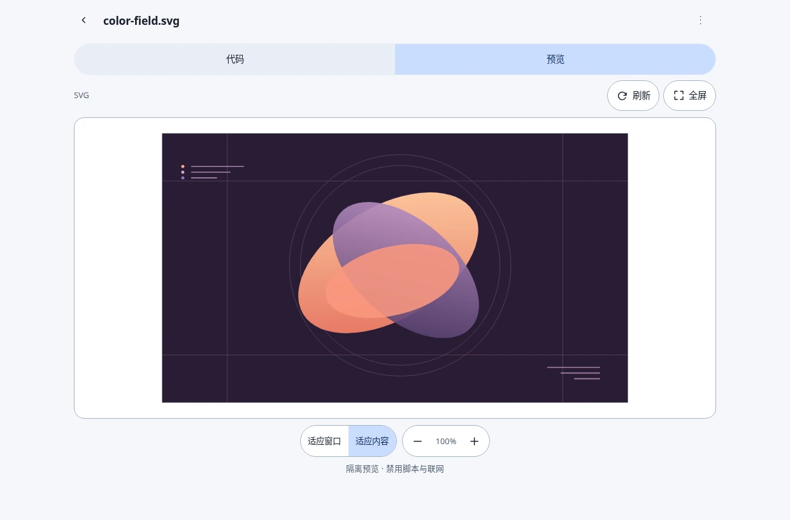

打开或导入
网页版点「载入示例」，也可以粘贴代码或导入本地文件。

网页版点「载入示例」，也可以粘贴代码或导入本地文件。
在源码与预览之间切换。HTML / SVG 可渲染，普通文本按原文查看。
导出保留一份文件。首次成功加载后，支持离线的浏览器可继续打开工作区。
普通话配音 · 中文字幕为主，英文为辅
iPhone / iPad 用 Safari 打开，分享 → 添加到主屏幕；有「作为网页 App 打开」就开启。Android Chrome 可从菜单安装。
直接用浏览器打开。支持安装的 Chrome／Edge 会在地址栏或菜单出现安装入口。
需要更多文件格式、系统分享或本地文件工作流，下载 APK。原生 iOS 暂未正式发布。
网页版仅在浏览器本地保存草稿，不跨设备同步；清理站点数据会丢失未导出的内容。网页版不等同安卓完整版。